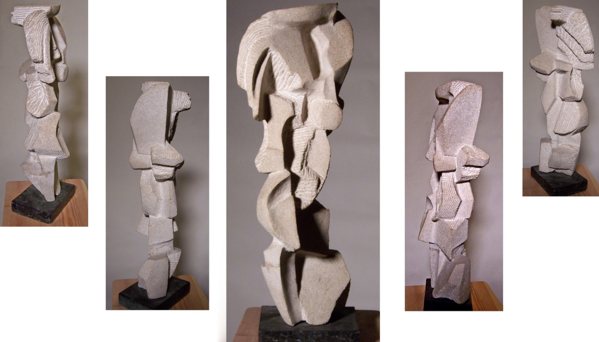
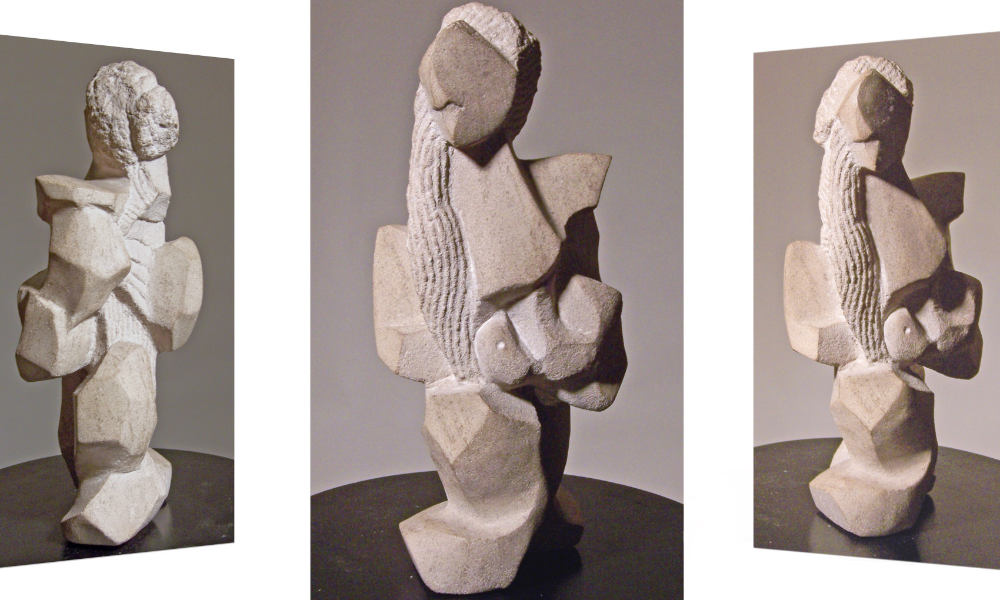
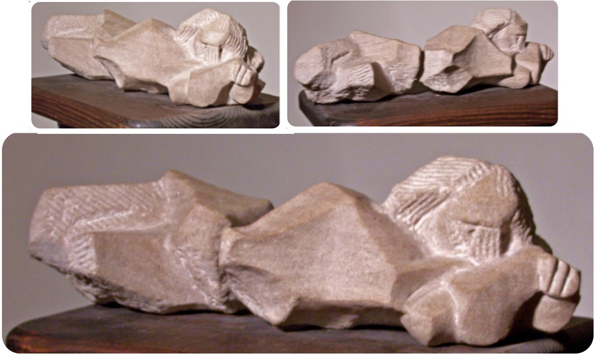
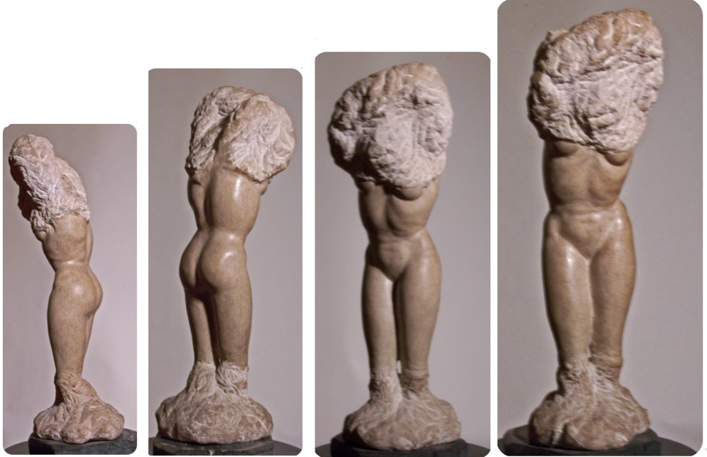
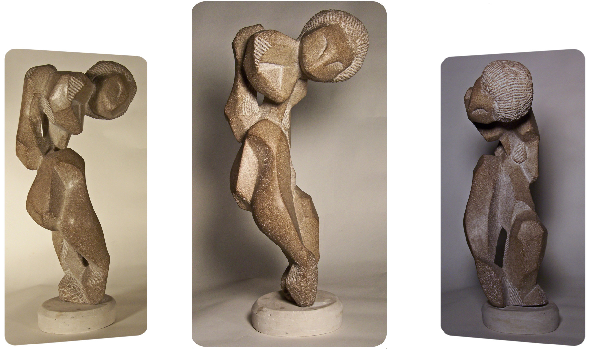

Texture is a key element of art
Along with line, color, shape, form, value, and space, texture is the look and "outer feeling" of an artwork's surface. It shifts moods, bends light, and cracks open bias.
Texture hints of tree bark, of braid, and of all things tactile. Letting life learn from art’s tongue, texture messes with your head in the best way possible. Like Dubuffet’s scribbles or Pollock’s drips, it makes you feel before you think. My art whispers: "If life’s gritty, why shouldn’t beauty be?"
I selectively use shape and texture

Why? Because artists like Giacometti and Henry Moore knew: jagged edges tell better stories. So, I keep my stone rough. The textures aren’t accidents—they’re love letters to kinks, curls, and all things "unrefined."

So next time you see a "flaw"—a crack, a curl, a bump—remember: artists like Wangechi Mutu and Jean Dubuffet built empires on "imperfections." Real beauty? It’s not a finish line. It’s the whole wild race.

Art's unfiltered, Beauty Beyond Boundaries
Back in college, I noticed something — nearly all students polished their sculptures to slick, shiny finishes. It made me think: why does "perfection" always mean smooth? Even artists like Brancusi and Michelangelo left some works rough, celebrating stone’s natural grit.

Texture isn’t just how art feels—it’s how it speaks. Think of Anselm Kiefer’s cracked landscapes or Louise Bourgeois’s lumpy sculptures. They scream, "Life isn’t smooth, and that’s the point." My chisel marks? They’re shout-outs to every coiled hair strand.

Richard Diaz
Every artwork breathes through three sacred dimensions—the subject (its visible soul), the form (its body shaped by hands and heart), and the content (the whispered why that lingers beneath). Like a poem half-said, true meaning unfolds slowly, waiting for those who look beyond the surface to hear its quiet song.